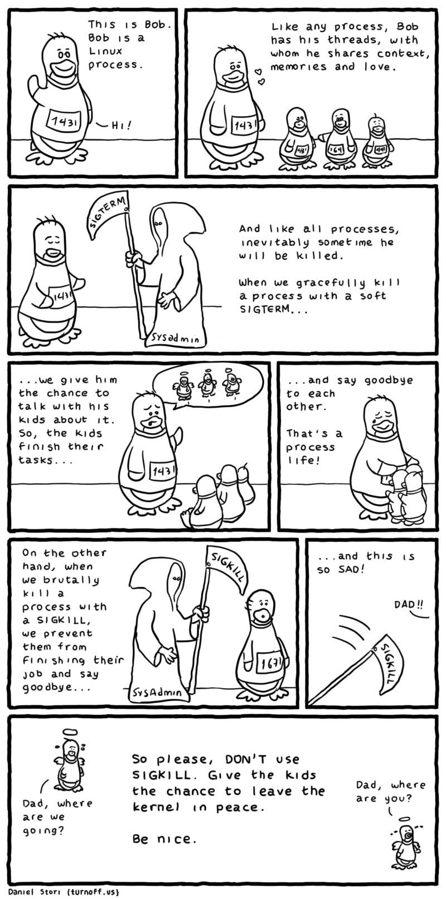

Linux Terminal
cat——查看文本文档
用于查看文本文档，concatenate。
参数说明：
-n 或 —number：由 1 开始对所有输出的行数编号。
-b 或 —number-nonblank：和 -n 相似，只不过对于空白行不编号。
-s 或 —squeeze-blank：当遇到有连续两行以上的空白行，就代换为一行的空白行。
-v 或 —show-nonprinting：使用 ^ 和 M- 符号，除了 LFD 和 TAB 之外。
-E 或 —show-ends : 在每行结束处显示 $。
-T 或 —show-tabs: 将 TAB 字符显示为 ^I。
-A, —show-all：等价于 -vET。
-e：等价于”-vE”选项；
-t：等价于”-vT”选项；
chattr——更改文件属性
Linux chattr命令用于改变文件属性。
参数：
-R 递归处理，将指定目录下的所有文件及子目录一并处理。
-v<版本编号> 设置文件或目录版本。
-V 显示指令执行过程。
+<属性> 开启文件或目录的该项属性。
-<属性> 关闭文件或目录的该项属性。
=<属性> 指定文件或目录的该项属性。
八种文件属性：
a：让文件或目录仅供附加用途。
b：不更新文件或目录的最后存取时间。
c：将文件或目录压缩后存放。
d：将文件或目录排除在倾倒操作之外。
i：不得任意更动文件或目录。
s：保密性删除文件或目录。
S：即时更新文件或目录。
u：预防意外删除。
示例：
chattr +i /etc/resolv.conf 用chattr命令防止系统中某个关键文件被修改
chattr +a /var/log/messages 让某个文件只能往里面追加数据，但不能删除，适用于各种日志文件
chgrp——更改文件所属组
变更文件或目录的所属群组——chgrp 允许普通用户改变文件所属的组，只要该用户是该组的一员。
参数：
-c或—changes 效果类似”-v”参数，但仅回报更改的部分。
-f或—quiet或—silent 不显示错误信息。
-h或—no-dereference 只对符号连接的文件作修改，而不更动其他任何相关文件。
-R或—recursive 递归处理，将指定目录下的所有文件及子目录一并处理。
-v或—verbose 显示指令执行过程。
—help 在线帮助。
—reference=<参考文件或目录> 把指定文件或目录的所属群组全部设成和参考文件或目录的所属群组相同。
—version 显示版本信息。
示例：
chgrp -v bin log2012.log
chmod——更改文件读、写、执行权限
用于更改文件rwx（读、写、执行）权限。『R：4 W：2 Ｘ：1』
参数：
- u 表示该文件的拥有者，g 表示与该文件的拥有者属于同一个群体(group)者，o 表示其他以外的人，a 表示这三者皆是。
- + 表示增加权限、- 表示取消权限、= 表示唯一设定权限。
- r 表示可读取，w 表示可写入，x 表示可执行，X 表示只有当该文件是个子目录或者该文件已经被设定过为可执行。
其他参数说明：
- -c : 若该文件权限确实已经更改，才显示其更改动作
- -f : 若该文件权限无法被更改也不要显示错误讯息
- -v : 显示权限变更的详细资料
- -R : 对目前目录下的所有文件与子目录进行相同的权限变更(即以递归的方式逐个变更)
- —help : 显示辅助说明
- —version : 显示版本
其他说明:
u、g、o、a——a=ugo
X：特殊执行权限——只有当文件为目录文件，或者其他类型的用户有可执行权限时，才将文件权限设置可执行
s：setuid/gid——当文件被执行时，根据who参数指定的用户类型设置文件的setuid或者setgid权限
t：粘贴位——设置粘贴位，只有超级用户可以设置该位，只有文件所有者u可以使用该位
八进制权限语法：
| # | 权限 | rwx | 二进制 |
|---|---|---|---|
| 7 | 读 + 写 + 执行 | rwx | 111 |
| 6 | 读 + 写 | rw- | 110 |
| 5 | 读 + 执行 | r-x | 101 |
| 4 | 只读 | r— | 100 |
| 3 | 写 + 执行 | -wx | 011 |
| 2 | 只写 | -w- | 010 |
| 1 | 只执行 | —x | 001 |
| 0 | 无 | —- | 000 |
示例：
对file的所有者设置读写权限，清空该用户组和其他用户对file的所有权限（空格代表无权限）：
chmod u=rw,go= *file*
可使此程序具有 root 的权限：
chmod 4755 filename
相当于u=rwx (4+2+1),go=rx (4+1 & 4+1)。0 没有特殊模式：
chmod 0755 *file*
4设置了设置用户ID位，剩下的相当于 u=rwx (4+2+1),go=rx (4+1 & 4+1)：
chmod 4755 *file*
删除可执行权限对path/以及其所有的目录（不包括文件）的所有用户，使用’-type f’匹配文件：
find path/ -type d -exec chmod a-x {} \;
允许所有用户浏览或通过目录path/：
find path/ -type d -exec chmod a+x {} \;
cksum——查看sum
Linux cksum命令用于检查文件的CRC是否正确。CRC是一种排错检查方式，该校验法的标准由CCITT所指定，至少可检测到99.998%的已知错误。
参数：
- —help：在线帮助。
- —version：显示版本信息。
- 文件…:需要进行检查的文件路径
cmp——比较文件差异（只显差异）
用于比较两个文件是否有差异。当相互比较的两个文件完全一样时，则该指令不会显示任何信息。若发现有所差异，预设会标示出第一个不同之处的字符和列数编号。若不指定任何文件名称或是所给予的文件名为”-“，则cmp指令会从标准输入设备读取数据。
cmp [-clsv][-i <字符数目>][--help][第一个文件][第二个文件]
参数：
- -c或—print-chars 除了标明差异处的十进制字码之外，一并显示该字符所对应字符。
- -i<字符数目>或—ignore-initial=<字符数目> 指定一个数目。
- -l或—verbose 标示出所有不一样的地方。
- -s或—quiet或—silent 不显示错误信息。
- -v或—version 显示版本信息。
- —help 在线帮助。
diff——比较文件差异（逐行）
用于比较文件的差异。diff以逐行的方式，比较文本文件的异同处。如果指定要比较目录，则diff会比较目录中相同文件名的文件，但不会比较其中子目录。
语法：
1 | diff [-abBcdefHilnNpPqrstTuvwy][-<行数>][-C <行数>][-D <巨集名称>][-I <字符或字符串>][-S <文件>][-W <宽度>][-x <文件或目录>][-X <文件>][--help][--left-column][--suppress-common-line][文件或目录1][文件或目录2] |
参数：
-<行数> 指定要显示多少行的文本。此参数必须与-c或-u参数一并使用。
-a或—text diff预设只会逐行比较文本文件。
-b或—ignore-space-change 不检查空格字符的不同。
- -B或—ignore-blank-lines 不检查空白行。
- -c 显示全部内文，并标出不同之处。
- -C<行数>或—context<行数> 与执行”-c-<行数>”指令相同。
- -d或—minimal 使用不同的演算法，以较小的单位来做比较。
- -D<巨集名称>或ifdef<巨集名称> 此参数的输出格式可用于前置处理器巨集。
- -e或—ed 此参数的输出格式可用于ed的script文件。
- -f或-forward-ed 输出的格式类似ed的script文件，但按照原来文件的顺序来显示不同处。
- -H或—speed-large-files 比较大文件时，可加快速度。
- -l<字符或字符串>或—ignore-matching-lines<字符或字符串> 若两个文件在某几行有所不同，而这几行同时都包含了选项中指定的字符或字符串，则不显示这两个文件的差异。
- -i或—ignore-case 不检查大小写的不同。
- -l或—paginate 将结果交由pr程序来分页。
- -n或—rcs 将比较结果以RCS的格式来显示。
- -N或—new-file 在比较目录时，若文件A仅出现在某个目录中，预设会显示：
- Only in目录：文件A若使用-N参数，则diff会将文件A与一个空白的文件比较。
- -p 若比较的文件为C语言的程序码文件时，显示差异所在的函数名称。
- -P或—unidirectional-new-file 与-N类似，但只有当第二个目录包含了一个第一个目录所没有的文件时，才会将这个文件与空白的文件做比较。
- -q或—brief 仅显示有无差异，不显示详细的信息。
- -r或—recursive 比较子目录中的文件。
- -s或—report-identical-files 若没有发现任何差异，仍然显示信息。
- -S<文件>或—starting-file<文件> 在比较目录时，从指定的文件开始比较。
- -t或—expand-tabs 在输出时，将tab字符展开。
- -T或—initial-tab 在每行前面加上tab字符以便对齐。
- -u,-U<列数>或—unified=<列数> 以合并的方式来显示文件内容的不同。
- -v或—version 显示版本信息。
- -w或—ignore-all-space 忽略全部的空格字符。
- -W<宽度>或—width<宽度> 在使用-y参数时，指定栏宽。
- -x<文件名或目录>或—exclude<文件名或目录> 不比较选项中所指定的文件或目录。
- -X<文件>或—exclude-from<文件> 您可以将文件或目录类型存成文本文件，然后在=<文件>中指定此文本文件。
- -y或—side-by-side 以并列的方式显示文件的异同之处。
- —help 显示帮助。
- —left-column 在使用-y参数时，若两个文件某一行内容相同，则仅在左侧的栏位显示该行内容。
- —suppress-common-lines 在使用-y参数时，仅显示不同之处。
实例1：比较两个文件
1 | [root@localhost test3]# diff log2014.log log2013.log |
上面的”3c3”和”8c8”表示log2014.log和log20143log文件在3行和第8行内容有所不同；”11,12d10”表示第一个文件比第二个文件多了第11和12行。
实例2：并排格式输出
1 | [root@localhost test3]# diff log2014.log log2013.log -y -W 50 |
说明：
- “|”表示前后2个文件内容有不同
- “<”表示后面文件比前面文件少了1行内容
- “>”表示后面文件比前面文件多了1行内容
usb-modeswitch——控制“多状态”USB设备的模式
1 | 控制“多状态”USB设备的模式。一些新的USB设备有他们的专有Windows驱动板，其中大多数是WWAN和WLAN加密狗。当第一次插入时，它们就像一个闪存，并从那里开始安装Windows驱动程序。如果驱动程序已经安装，它会使存储设备消失，并显示一个新设备(主要是与调制解调器端口组合)。在Linux上，大多数情况下驱动程序作为内核模块可用，如“usbserial”或“option”。但是，设备最初默认绑定到“usb存储”。然后usb_modeswitch可以向设备发送提供的批量消息(很可能是一个大容量存储命令)，此消息必须通过分析Windows驱动程序的动作来确定。在某些情况下，USB控制命令用于切换。这些情况由自定义函数处理，不需要提供批量消息。通常，程序是通过一组针对许多已知设备的配置来分发的，这允许在插入时对设备进行完全自动的处理，这可以通过将usb_modeswitch与udev守护进程启动的包装器脚本usb_modeswitch_dispatcher结合起来实现。注意，usb_modeswitch本身没有特定的Linux依赖项。 |
选项 含义
-h —help 显示选项摘要
-e —version 打印版本信息并退出
-v —default-vendor NUM 要查找的Vendor ID(强制)，通常以十六进制数字的形式给出(例如:0x12d1)。每个USB设备由一个编号被指定给供应商由USB协会和一个编号为各自的模型(Product ID)被供应商选择
-p —default-product NUM 要查找的Product ID(必须)
-V —target-vendor NUM 目标Vendor ID。当给定时，将搜索和检测最初为信息目的。如果成功检查(选项-s)是活动的，建议提供目标id(Vendor/Product)或目标类
-j —find-mbim 返回配置编号与MBIM接口和退出
-P —target-product NUM 目标Produnct ID
-b —bus-num NUM 总线编号
-g —device-num NUM 如果bus和设备号码被提供，在一个特定的USB端口上的一个特定设备的处理是有保证的，相比之下只使用USB ID。这是重要的，如果在一个系统上有多个类似的设备
-C —target-class NUM 根据USB规范的目标设备类。有些设备在切换成功后仍保留原来的Vendor/Product ID。为了防止它们再次被处理，可以检查device类。对于未切换的设备，它总是8(存储类)，对于切换的调制解调器，它通常是0xff(特定于供应商)。在复合模式中，观察第一个接口的类
-m —message-endpoint NUM 用于数据传输的特定端点。只作测试用途;通常端点由设备属性决定
-M —message-content STRING 作为交换命令发送的批量消息。以十六进制字符串的形式提供
-2, -3 —message-content2, —message-content3 STRING 作为交换命令发送的其他批量消息。以十六进制字符串的形式提供。当与大容量存储命令一起使用时，强烈建议set -need-response符合规范并避免可能出现的错误
-w —release-delay NUM 在发出所有批量消息之后，在释放接口之前等待NUM毫秒。对于旧系统上的某些调制解调器(特别是在弹出消息后)是必需的
-n —need-response 读取对大容量存储命令传输的响应(命令状态包装器)。如果没有读取响应，一些设备在切换时有困难;大多数设备会立即消失。当发送带有-2和-3的多个大容量存储命令时，可能需要设置此选项以避免传输错误
-r —response-endpoint NUM 如果选项-n是活动的，尝试从那里读取对存储命令的响应。只作测试用途;通常端点由设备属性决定
-K —std-eject 应用标准的SCSI序列“允许介质删除”和“弹出”。意味着- n。一个“消息”可以添加-M，它将在弹出序列之后传输
-d —detach-only 只需分离当前驱动程序。对于一些早期设备成功切换来说，这已经足够了。否则，这个特性可以用作特殊情况下的“手术刀”，比如将驱动程序从单独的接口中分离出来
-H —huawei-mode 发送华为老式设备使用的特殊控制信息
-J —huawei-new-mode 发送一个特定的批量消息，所有新的华为设备都使用
-S —sierra-mode 发送一个由Sierra设备使用的特殊控制消息
-G —gct-mode 发送GCT芯片组使用的特殊控制消息
-T —kobil-mode 发送Kobil设备使用的特殊控制信息
-N —sequans-mode 发送一个特殊的控制信息使用Sequans芯片组
-A —mobileaction-mode 发送一个由移动操作设备使用的特殊控制消息
-B —qisda-mode 发送一个特殊的控制消息使用Qisda设备
-E —quanta-mode 发送量子设备使用的特殊控制信息
-F —pantech-mode NUM 发送由Pantech设备使用的特殊控制信息。值NUM将作为“wValue”在控制消息中使用
-Z —blackberry-mode 发送一些较新的黑莓设备使用的特殊控制信息
-O —sony-mode 采用索尼爱立信设备使用的特殊序列。意味着选择——check-success
-L —cisco-mode 发送一系列由思科设备使用的批量消息
-R —reset-usb 发送USB复位命令到设备。可与任何切换方式组合或单独使用。它总是作为所有设备交互的最后一步来完成。很少有设备需要它来完成切换;除此之外，它在测试期间也很有用
-c —config-file FILENAME 使用特定的配置文件。如果在命令行参数中提供了任何ID或切换选项，则忽略该选项。在这种情况下，必须在命令行上提供所有强制参数
-f —long-config STRING 在配置文件语法中以命令行多行字符串的形式提供设备详细信息
-t —stdinput 在配置文件语法中从标准输入读取设备细节，例如从命令管道重定向(多行文本)
-Q —quiet 不要显示进度或错误消息
-W —verbose 在运行之前打印所有设置并显示libusb调试消息
-D —sysmode 稍微改变程序的行为。发出一条包含有效目标设备ID的成功消息，并发出系统slog通知。主要用于与包装器脚本集成
-s —check-success NUM 切换后，继续检查结果，直到最大。NUM秒。如果提供了目标id或目标类，则它们的出现表明一定成功。否则，原设备的断开被视为可能的证据
-I —no-inquire 不要从设备获取SCSI属性(默认为on)。为了正确识别不同的设备，存储部分的属性提供了有价值的信息。对于已知和受支持的设备来说，这是不需要的
-i —interface NUM 选择初始USB接口(默认为0)。仅用于测试目的
-u —configuration NUM 选择USB配置(应用于任何其他可能的切换操作之后)
-a —altsetting NUM 选择备用USB接口设置(切换后应用)。主要用于测试
Git
Git常用命令
Git新建分支推送远程
1 |
|
Git删除远程分支
1 |
|
删除本地仓库中远程仓库已经不存在的分支
1 | # 使用如下命令，查看远程分支、本地分支以及它们的对应关系 |
GCM——Git Credential Manager
安装
1 | 到https://github.com/git-ecosystem/git-credential-manager/releases/latest下载最新的deb安装即可 |
Installing Git
sudo apt install git-all
In order to be able to add the documentation in various formats (doc, html, info), these additional dependencies are required:支持多种文本格式。
1 | sudo apt-get install asciidoc xmlto docbook2x |
Configure Git
让Git显示配置文件
1 | git config --list --show-origin |
用户信息
安装完 Git 之后，要做的第一件事就是设置你的用户名和邮件地址。 这一点很重要，因为每一个 Git 提交都会使用这些信息，它们会写入到你的每一次提交中，不可更改：
1 | git config --global user.name "John Doe" |
再次强调，如果使用了 --global 选项，那么该命令只需要运行一次，因为之后无论你在该系统上做任何事情， Git 都会使用那些信息。 当你想针对特定项目使用不同的用户名称与邮件地址时，可以在那个项目目录下运行没有 --global 选项的命令来配置。
检查配置信息
如果想要检查你的配置，可以使用 git config --list 命令来列出所有 Git 当时能找到的配置。
1 | git config --list |
由于 Git 会从多个文件中读取同一配置变量的不同值，因此你可能会在其中看到意料之外的值而不知道为什么。 此时，你可以查询 Git 中该变量的 原始 值，它会告诉你哪一个配置文件最后设置了该值：
1 | git config --show-origin rerere.autoUpdate |
Get Start
初始化一个仓库
git init,会生成一个.git文件夹。参见 Git 内部原理 来了解更多关于到底.git文件夹中包含了哪些文件的信息。从远程仓库克隆
git clone https://remote_repository_address。如果你想在克隆远程仓库的时候，自定义本地仓库的名字，你可以通过额外的参数指定新的目录名：1
git clone https://github.com/libgit2/libgit2 mylibgit
通过
git add命令来指定所需的文件来进行追踪。执行
git commit进行提交：git commit -m 'initial project version'。git rm --cached 【文件】：删除对某个文件的跟踪。
VNC Server
1.让VNC显示当前桌面（远程桌面）
使用x0vncserver（tigervnc）
1 | # 配置显示当前桌面：https://superuser.com/questions/696840/is-there-a-way-to-get-tightvnc-to-host-the-native-display-0 |
x0vncserver -localhost no -passwordfile ~/.vnc/passwd -display :0
使用x11vnc
1 | # 配置显示当前桌面：https://raspberrypi.stackexchange.com/questions/9590/tightvncserver-show-the-same-screen-on-hdmi-and-vncclient |
x11vnc -display :0 -usepw
问题：解决x11vnc -display :0 -usepw连接后闪退的问题
（解决：修改颜色）VNC Viewer来连接一台N久没登陆的服务器看看，输入密码连上后直接闪退，可能是ColourLevel的问题。依次点Option—>Advanced—>Expert找到ColourLevel，默认值是pal8，修改为rgb222或full。
2.让VNC显示另外的桌面
Tightvncserver
安装sudo apt install tightvncserver
常用VNC的~/.vnc/xstartup
简单的：
1 |
|
比如：
1 |
|
或者：
1 |
|
TightVNC设置在5902端口且设置分辨率
1 | tightvncserver :2 -geometry 1024x576 |
结束VNC:tightvncserver -kill :2
问题：解决Tightvncserver连接后gnome-terminal不在当前VNC会话，而是在:0显示屏
https://askubuntu.com/questions/694795/how-to-start-vnc-session-with-gnome-desktop
安装sudo apt-get install gnome-panel gnome-settings-daemon metacity nautilus gnome-terminal
问题：sh: 1: /home/admin/.vnc/xstartup: Permission denied
chmod +x xstartup
问题：解决Tightvncserver启动失败（安装了tigervnc-standalone-server导致tightvnc启动失败）
报错日志：
1 | 28/04/24 15:31:00 Xvnc version TightVNC-1.3.10 |
解决：sudo apt purge tigervnc-standalone-server
从ifconfig到ip
1. 显示网络接口信息
ifconfig:
1 | bash |
ip:
1 | bash |
2. 启用/禁用网络接口
ifconfig:
1 | bash |
ip:
1 | bash |
3. 配置IP地址
ifconfig:
1 | bash |
ip:
1 | bash |
4. 显示路由表
ifconfig:
1 | bash |
ip:
1 | bash |
5. 设置默认网关
ifconfig:
1 | bash |
ip:
1 | bash |
6. 配置防火墙规则
iptables:
1 | bash |
注意事项
- 请根据你的实际网络配置和需求调整上述命令。
- 如果你使用
ufw作为防火墙管理工具，可以使用ufw命令进行配置。 - 在进行更改之前，请确保备份重要的配置文件，以防发生意外。
各种编译错误
sudo apt-get install libcairo2-dev libjpeg-dev libgif-dev
1 | -- Package 'cairo-xcb', required by 'virtual:world', not found |
2.安装cmake-extra：sudo apt install extra-cmake-modules
3.sudo apt install appstream
1 | /usr/bin/msgfmt: cannot locate ITS rules for /home/admin/project/fcitx5-master/data/org.fcitx.Fcitx5.metainfo.xml.in |
4.sudo apt install libgirepository1.0-dev
1 | -- Package 'gobject-introspection-1.0', required by 'virtual:world', not found |
5.sudo apt install qtbase5-dev
1 | CMake Error at qt5/CMakeLists.txt:5 (find_package): |
If you like this blog or find it useful for you, you are welcome to comment on it. You are also welcome to share this blog, so that more people can participate in it. If the images used in the blog infringe your copyright, please contact the author to delete them. Thank you !